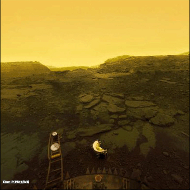

Sziasztok lányok!
A szabadulásotokhoz a következő segítséget gyűjtöttük:
5 dolog, ami nélkül ne induljatok el
- Elemlámpa
- Kávé
A földi idő átszámítása vénuszira
| Föld |
Vénuszi nap |
Vénuszi év |
| 243 nap |
1 |
0.947 |
| 224,7 nap |
1,081 |
1 |
Így néz ki a felszín a Vénuszon

A Scratch projekt, ami segíthet még
A legjobb weboldalak kapcsolattartáshoz
Facebook